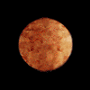

|  | 
| 
| 
| 
| |
| PLANET: | Mercury | Venus | Earth | Jupiter | Saturn |
| Mass (kg): | 3.3 x 1023 | 4.87 x 1024 | 5.98 x 1024 | 1.90 x 1027 | 5.69 x 1026 |
| Diameter | 4879.4 | 12104 | 12756 | 142,800 | 120660 |
| Mean Destiny (kg/m3) | 5420 | 5250 | 5520 | 1314 | 690 |
| Escape Velocity (m/s) | 4300 | 10400 | 11200 | 59500 | 35600 |
| Average Distance from the Sun | 0.387 AU (57,909,175 km) | 0.723 AU (108,208,930 km) | 1 AU (149,597,890 km) | 5.203 AU (778,412,020 km) | 9.537 AU (1,426,725,400 km) |
| Rotation Period (length of day in Earth Days) | 58.65 | 243.02 (retrograde) | 1 (23.93 hours) | 0.41 (9.8 Earth hours) | 0.44 (10.2 Earth hours) |
| Revolution Period (length of year in Earth Days) | 87.97 | 224.7 | 365.26 | 11.86 | 29.46 |